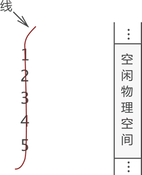
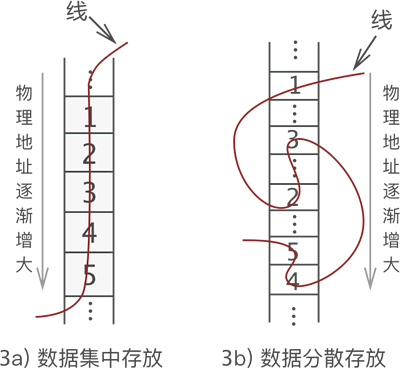
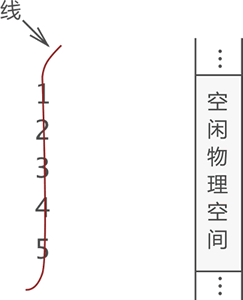
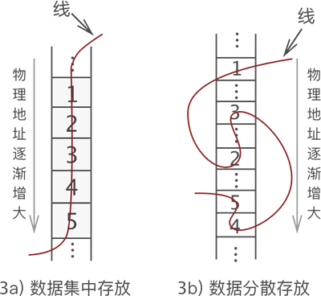

什么是线性表（线性存储结构）
通过前面的学习我们知道，具有“一对一”逻辑关系的数据，最佳的存储方式是使用线性表。那么，什么是线性表呢？
线性表，全名为线性存储结构。使用线性表存储数据的方式可以这样理解，即“把所有数据用一根线儿串起来，再存储到物理空间中”。
图 1 "一对一"逻辑关系的数据
如图 1 所示，这是一组具有“一对一”关系的数据，我们接下来采用线性表将其储存到物理空间中。
首先，用“一根线儿”把它们按照顺序“串”起来，如图 2 所示：

图 2 数据的"线性"结构
图 2 中，左侧是“串”起来的数据，右侧是空闲的物理空间。把这“一串儿”数据放置到物理空间，我们可以选择以下两种方式，如图 3 所示。

图 3 两种线性存储结构
图 3a) 是多数人想到的存储方式，而图 3b) 却少有人想到。我们知道，数据存储的成功与否，取决于是否能将数据完整地复原成它本来的样子。如果把图 3a) 和图 3b) 线的一头扯起，你会发现数据的位置依旧没有发生改变（和图 1 一样）。因此可以认定，这两种存储方式都是正确的。
将具有“一对一”关系的数据“线性”地存储到物理空间中，这种存储结构就称为线性存储结构（简称线性表）。
使用线性表存储的数据，如同向数组中存储数据那样，要求数据类型必须一致，也就是说，线性表存储的数据，要么全部都是整形，要么全部都是字符串。一半是整形，另一半是字符串的一组数据无法使用线性表存储。
也就是说，线性表存储结构可细分为顺序存储结构和链式存储结构。
另外，对于具有“一对一”逻辑关系的数据，我们一直在用“某一元素的左侧（前边）或右侧（后边）”这样不专业的词，其实线性表中有更准确的术语：
以图 1 数据中的元素 3 来说，它的直接前驱是 2 ，此元素的前驱元素有 2 个，分别是 1 和 2；同理，此元素的直接后继是 4 ，后继元素也有 2 个，分别是 4 和 5。如图 4 所示：

图 4 前驱和后继
线性表，全名为线性存储结构。使用线性表存储数据的方式可以这样理解，即“把所有数据用一根线儿串起来，再存储到物理空间中”。
图 1 "一对一"逻辑关系的数据
如图 1 所示，这是一组具有“一对一”关系的数据，我们接下来采用线性表将其储存到物理空间中。
首先，用“一根线儿”把它们按照顺序“串”起来，如图 2 所示：

图 2 数据的"线性"结构
图 2 中，左侧是“串”起来的数据，右侧是空闲的物理空间。把这“一串儿”数据放置到物理空间，我们可以选择以下两种方式，如图 3 所示。

图 3 两种线性存储结构
图 3a) 是多数人想到的存储方式，而图 3b) 却少有人想到。我们知道，数据存储的成功与否，取决于是否能将数据完整地复原成它本来的样子。如果把图 3a) 和图 3b) 线的一头扯起，你会发现数据的位置依旧没有发生改变（和图 1 一样）。因此可以认定，这两种存储方式都是正确的。
将具有“一对一”关系的数据“线性”地存储到物理空间中，这种存储结构就称为线性存储结构（简称线性表）。
使用线性表存储的数据，如同向数组中存储数据那样，要求数据类型必须一致，也就是说，线性表存储的数据，要么全部都是整形，要么全部都是字符串。一半是整形，另一半是字符串的一组数据无法使用线性表存储。
顺序存储结构和链式存储结构
图 3 中我们可以看出，线性表存储数据可细分为以下 2 种：- 如图 3a) 所示，将数据依次存储在连续的整块物理空间中，这种存储结构称为顺序存储结构（简称顺序表）；
- 如图 3b) 所示，数据分散的存储在物理空间中，通过一根线保存着它们之间的逻辑关系，这种存储结构称为链式存储结构（简称链表）；
也就是说，线性表存储结构可细分为顺序存储结构和链式存储结构。
前驱和后继
数据结构中，一组数据中的每个个体被称为“数据元素”（简称“元素”）。例如，图 1 显示的这组数据，其中 1、2、3、4 和 5 都是这组数据中的一个元素。另外，对于具有“一对一”逻辑关系的数据，我们一直在用“某一元素的左侧（前边）或右侧（后边）”这样不专业的词，其实线性表中有更准确的术语：
- 某一元素的左侧相邻元素称为“直接前驱”，位于此元素左侧的所有元素都统称为“前驱元素”；
- 某一元素的右侧相邻元素称为“直接后继”，位于此元素右侧的所有元素都统称为“后继元素”；
以图 1 数据中的元素 3 来说，它的直接前驱是 2 ，此元素的前驱元素有 2 个，分别是 1 和 2；同理，此元素的直接后继是 4 ，后继元素也有 2 个，分别是 4 和 5。如图 4 所示：
图 4 前驱和后继
关注公众号「站长严长生」，在手机上阅读所有教程，随时随地都能学习。内含一款搜索神器，免费下载全网书籍和视频。

微信扫码关注公众号